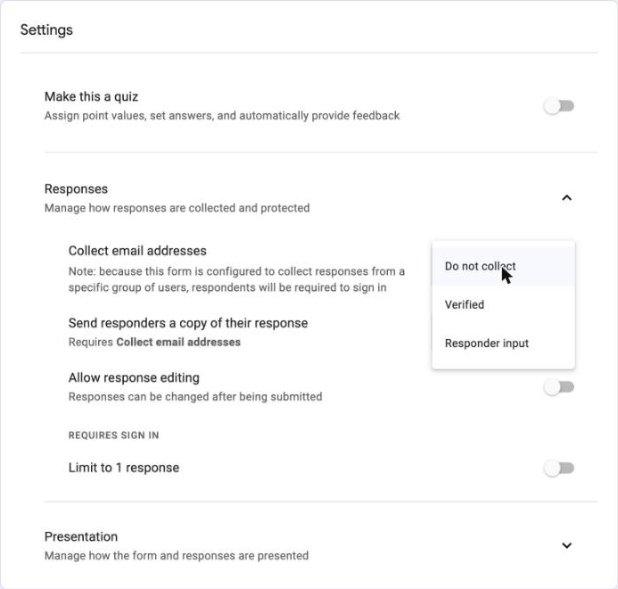
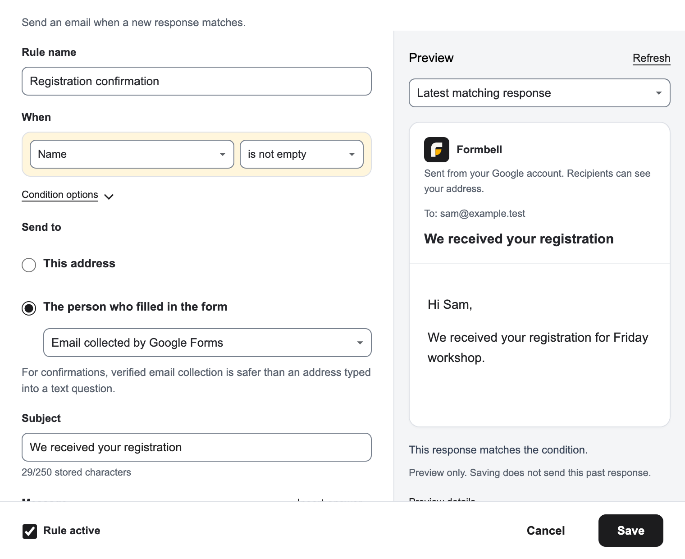
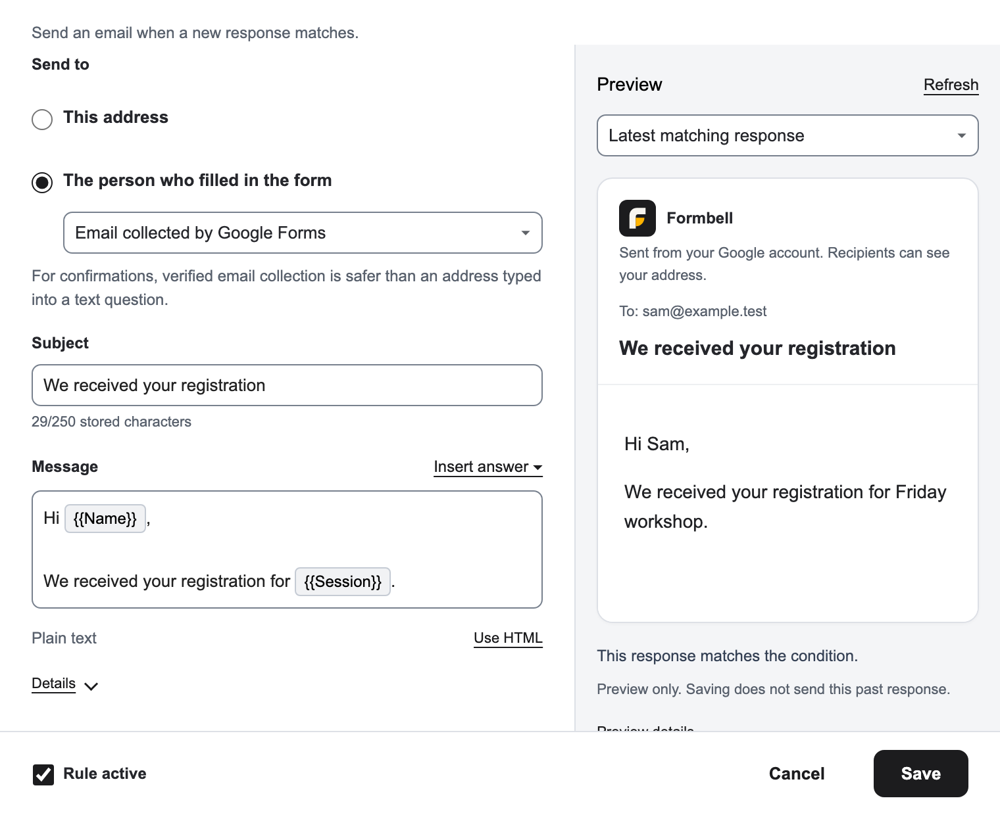
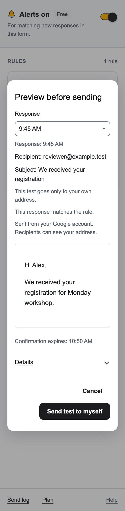

Send a personalized confirmation email from Google Forms
Formbell is being submitted for Google review and is not yet available. An install link will be added here after approval.
If respondents only need a copy of the answers they submitted, start with Google Forms' built-in response receipts. You may not need an add-on.
Use Formbell when you want a custom confirmation message, response values in the email, or a confirmation that only runs when a specific answer matches a rule.
First, check whether Google's response receipts are enough
In your Google Form:
- Open Settings and its Responses section.
- Under Collect email addresses, choose the collection method you need. Verified uses the respondent's signed-in Google account; manual responder entry lets them type an address.
- Under Send responders a copy of their response, choose When requested or Always.

Example Google Forms settings showing where to choose these options. The pictured form has not enabled email collection or response copies; its sign-in note reflects that form's access settings and may differ for yours.
This is useful when the original answer copy is the confirmation you want. Google's response-management help explains the setting and notes that filtering or anti-abuse measures can affect receipt delivery.
If you enable both Google's receipts and a separate Formbell confirmation, a respondent may receive both. Decide whether you want both types of message rather than assuming Formbell replaces the native receipt setting.
Example: a custom registration confirmation
This example emails one respondent a short registration acknowledgement. It confirms that a response was submitted; it does not approve a place, take a payment, or create a booking.
Use a small test form or a copy of your real form. Include:
| Form setting or question | Purpose |
|---|---|
| Name, required | Personalizes the message and supplies the rule's condition |
| Session | Shows the respondent's chosen session in the message |
| Verified email collection, when suitable | Supplies the respondent address from their Google account |
Submit one sample response using your own account and test details, such as Name: Sam and Session: Friday workshop, before turning on alerts.
1. Choose when the confirmation should run
Open Formbell from the form's add-on menu. On a first visit, choose Start in this form if Connect this form is shown. Choose Create a rule on home to open the rule-editor dialog, and name it Registration confirmation. If this form already has one of your rules on Free, choose Edit on that rule instead. A form with none of your rules can create one even if another form has your Free selection.
Under When, choose Name, then choose is not empty. Since Name is required in this example, completed responses normally match this rule. No comparison value is needed for this condition.
If only one registration type should receive the email, use that question with is and select its value from the comparison-value list. For a text question, enter the exact comparison text instead. One rule has one condition; keep the example to the condition you actually need.
2. Choose the respondent's address
Under Send to, choose The person who filled in the form, then Email collected by Google Forms when the form supplies it. Verified collection is recommended when it fits your form's sign-in requirements.

Example product render using sample data.
If you instead collect an address in a separate question, select that question by name in the same email-source list. Formbell uses one email address from the response, not a comma-separated list.
Anyone can type someone else's address into a free-text question. Do not use an unverified address field as proof of identity or as a way to send repeated unsolicited messages. Test with your own address first. If the collected-email option is unavailable, check the form's email-collection setting before enabling the rule.
3. Write and personalize the message
For Subject, use a clear acknowledgement such as We received your registration.
In Message, type a short message. New rules use Plain text, so use ordinary paragraphs and line breaks. A final preview using the sample above could look like this:
Hi Sam,
We received your registration for Friday workshop.
Please keep this email for your records. We will contact you separately if anything else is needed.
To add Name or Session, put the cursor in Message, open Insert answer, and choose the question. The chip displays its title, such as {{Name}}, and reads that question's answer even if the question is later renamed. A Deleted question chip should be replaced with one for a current question. Use the menu; pasting a chip label does not create an answer chip. You can also put the cursor in Subject before using Insert answer.
Choose Use HTML to edit supported HTML markup. Existing formatted messages may open in HTML mode. If switching with Use plain text would lose formatting, review the converted message before confirming. The Subject counter includes stored placeholders and encoded characters, so follow its counter and warning. Open Details for message and storage limits.
Avoid putting information into the confirmation that the form does not establish. An acknowledgement should not promise approval, payment completion, or a reserved place unless your separate process has actually confirmed it.

Example product render using sample registration data.
In the right-hand Preview, choose Refresh to inspect a recent matching response, To, Subject, body, and condition result. If the completed search finds no match, it shows the latest response and a no-match notice. If asked to Choose a response, select one of the available dates; this is not the complete response history. Refresh again after changing the draft. Previewing does not send the past response; a matching result is not confirmation that every sending requirement is met. Its Details explains eligibility, and the editor's Details contains input and storage limits.
Choose Save, check the condition, recipient source, and subject in Save this rule?, then choose Save rule once. A successful save returns to the sidebar.
4. Preview, test, then enable the workflow
Use the switch beside Alerts off to turn alerts on for the test form, and make sure Rule active was checked when saving. If you use Free and Keep this rule on Free is offered, choose it for this confirmation rule. Saving here leaves any existing selection on another form unchanged; selecting this rule can pause the earlier one. Only one selected rule can run on Free across the account. Send me a test remains disabled until alerts are on.
On the saved rule, choose Send me a test. Preview before sending opens inside the sidebar. Its Response picker defaults to Latest matching response, using the saved rule and responses from the last 30 days. If no match is found in the completed search, it shows the latest response and a nonmatching result.
Check the displayed response date/time. You can choose another available date in Response and wait for its updated preview; this limited list is not the full response history. If prompted Choose a response, select one before sending. Review the subject, body, match result, and recipient. The self-test always goes only to your own Google account, even when the saved rule targets the respondent. A nonmatching self-test does not establish that the automatic rule would send.
Previewing does not send a message. Choose Send test to myself once when the preview is correct, or Cancel to close without sending.

Example product render using a selected sample response; the test goes to your own address.
Check the result and the send log. Accepted in Send log means Google accepted a request; it does not confirm inbox delivery.
For an end-to-end check, submit one new response through the form using your own respondent account or email address. Check that the selected condition matches, the intended address is used, and the message reads correctly. When you move to your real form, review the recipient source, rule selection, and alerts there too.
Free and Pro
One confirmation rule can use the free allowance of one selected rule running at a time across your Google account. If you also want a separate email to a teammate, that is another rule.
Pro is $4 per month or $29 per year, taxes included for more rules across that Google account's forms, within Google's execution and Formbell's storage limits. There is no separate Pro trial. You do not need to upgrade if one confirmation rule is enough.
If the confirmation is missing or needs resending
Check that the rule is active, alerts are on, the condition matches, the response supplies one valid address, and Google has allowance remaining. Test emails and manual resends use the allowance too.
For a retained Failed or Unknown entry, choose Review and resend when offered, check Preview before sending, then choose Resend current content once. An unknown result may already have reached the sending service; resending can create a duplicate. A manual resend uses the current rule and response, not a stored copy of the original email.
The log shares the form's latest 200 entries across all rules, and only entries from the last 30 days are available to view or resend, whichever limit is reached first. Formbell does not automatically email every historical response or responses observed more than 48 hours after submission.
For questions about limits, data deletion, or cancellation, email runredteam@gmail.com with the step, app version, error code, and UTC time. Please do not send responses, recipient addresses, message bodies, or license keys.
Google Forms is a trademark of Google LLC. Formbell is an independent app by Lazy Labs.